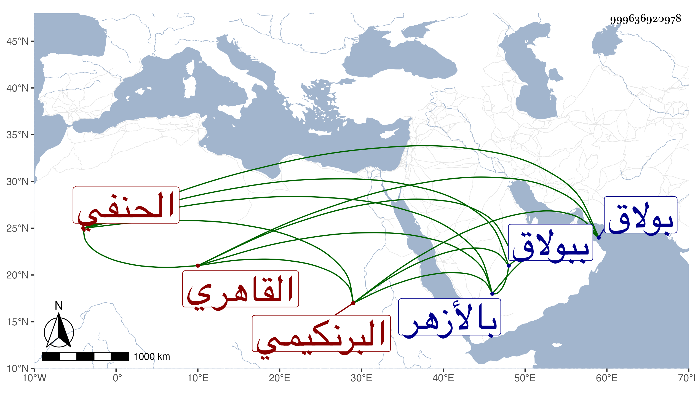

0902Sakhawi.DawLamic.ITO20230111-ara1.EIS1600.999636920978
Biography ID: 999636920978
647
محمد بن سليمان بن أحمد بن عمر بن غنام الشمس بن العلم البرنكيمي الأصل القاهري الحنفي ابن أخي الشرف موسى وأحد نواب الحنفية بمجلس الواجهة من بولاق . ولد في سنة ست وأربعين وثمانمائة ومات أبوه قبل استكماله شهرين فنشأ في كفالة عمه سيما وقد تزوج أمه وهو الذي أشار بتحنفه لكون والده كان أحد طلبة درس خشقدم بالأزهر ففعل واستقر عوضه فيه واشتغل عنده في النحو وكذا في فقه الحنفية وربما أخذ في الفقه عن الزين قاسم حين سكنه ببولاق وحفظ القرآن وبعض القدوري وحج وجاور واستنابه ابن الشحنة فمن بعده وأذن له ابن الأخميمي في الجلوس بسوق الرقيق يومي السوق .
